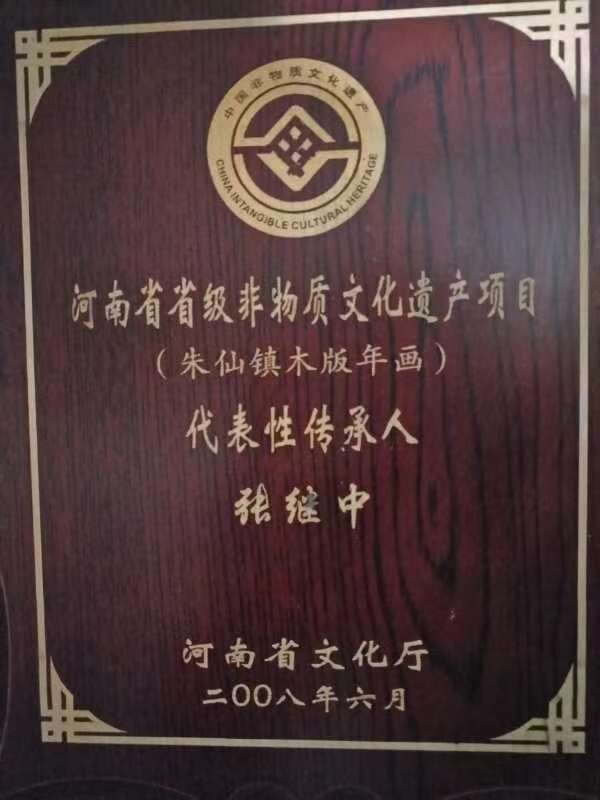

任鹤林，河南省非物质文化遗产传承人、开封朱仙镇年画艺术馆馆长，第五届河南省工艺美术大师 。师承朱永敬、苏建成、郭泰运，全面掌握画稿、雕版、印刷全套核心技艺，并在雕版技艺上取得成果。 为了更好地推广宣传年画艺术，任鹤林主动与大专院校合作，把博物馆作为实践基地，义务为学生讲解授课，并携带作品先后在新加坡、韩国、德国、法国、意大利、美国、马耳他等国家和地区进行展出和文化交流 。张继中是朱仙镇万同老店木版年画作坊第七代传承人，省级代表性传承人。他继承传统又创新雕版技法，作品被国家博物馆收藏，还编著十余部专集。

